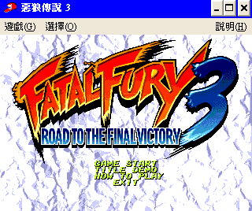
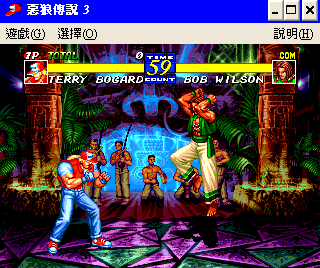

名稱：惡狼傳說3／餓狼傳說3：遠古征戰 (Fatal Fury 3: Road to the Final Victory，中文版) 簡介：SNK 1995年出品的格鬥遊戲，1998年移植至Windows，由CyberFront代理發行，1999年 由普威爾中文化並代理發行 [待補]。   保護：光碟，直接在光碟上執行。 備註：螢幕顯示模式需設定為16位元65536色，否則顯示的顏色可能會不正確。

